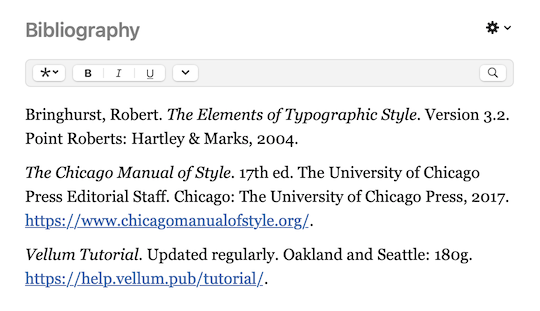
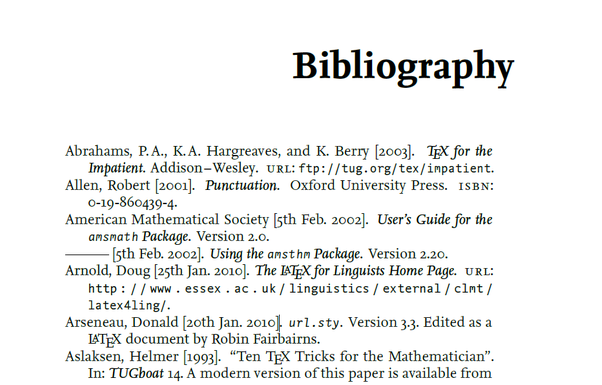
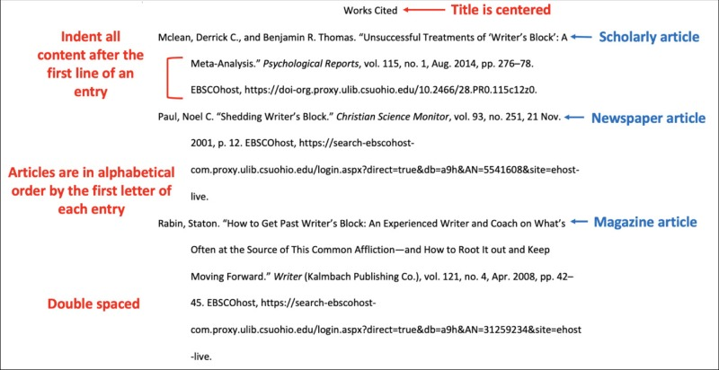

“First Amendment Encyclopedia.” Free Speech Center at MTSU, 2016, firstamendment.mtsu.edu/encyclopedia/. Accessed 20 May 2024.

“Strengthening Democracy With a Modern Civics Education.” Center for American Progress, 14 Dec. 2019, www.americanprogress.org/article/strengthening-democracy-modern-civics-education/. Accessed 20 May 2024.

“Civics Education is the Foundation for Global Citizenship.” Asia Society, 6 Nov. 2018, asiasociety.org/education/civics-education-foundation-global-citizenship. Accessed 20 May 2024.
